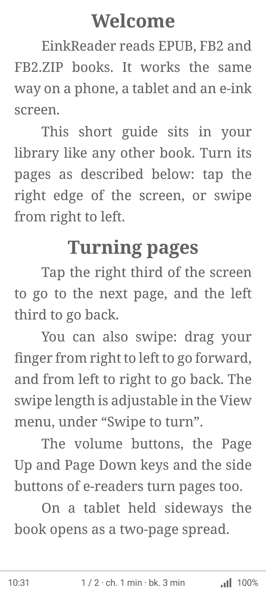
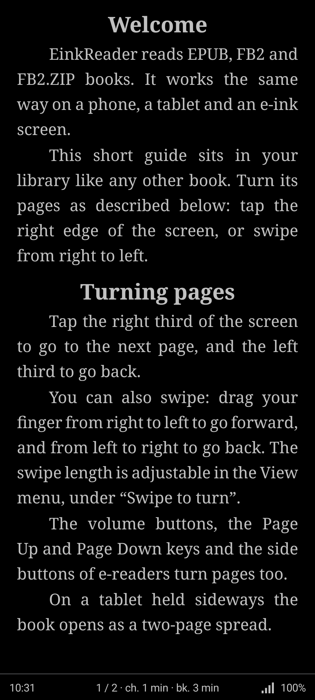
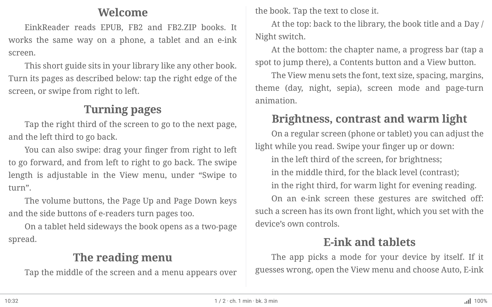

Give any screen the soft look of e-ink
EinkReader is a free e-book reader for Android. Its main feature is contrast control that recreates the calm, paper-like picture of an e-ink display on an ordinary phone or tablet, plus quick control of backlight and warm light to spare your eyes. No ads, no tracking.



Comfort for your eyes
All three are set with a swipe, right on the page. Put a finger on one third of the screen (not at the very top or bottom edge) and drag it up or down:
The value appears on screen while you swipe. Taps and horizontal swipes still turn pages.
Try it: drag the sliders
In the app you swipe up or down on a third of the page and the value appears on screen.
- Contrast like e-ink. A black-level setting lifts pure black to a soft dark grey and keeps the page white, so text is no longer a harsh black on glowing white. It is stored separately for day and night, so the night page can stay deep while the day page looks like paper.
- Backlight strength. Brightness is set right inside the reader, down to 1%, so reading in the dark is gentle.
- Warm light. A warm tint, adjustable from none to strong, takes the blue edge off the screen in the evening.
What it does
- Opens EPUB, FB2 and FB2.ZIP files you add yourself. Books protected against copying are not supported.
- E-ink mode: pure black and white, no animation, tap and button paging, periodic full refresh to clear ghosting.
- Tablet mode: day, night and sepia themes, smooth page turns, two-page spread on wide screens.
- Fonts, size, spacing and margins are adjustable.
- Optional sync of books and reading position between your own devices through a hidden app folder in your Google Drive. It only uses the app's own data folder; other files in your Drive are not visible to the app.
- English and Russian interface; a short built-in guide opens on first launch.
Availability
EinkReader is being prepared for Google Play. The link will appear here after release.
Privacy
All your books stay locally on your device. Optional sync goes only through your personal Google Drive. The app has no analytics and no ads. Details: privacy policy.
Support the author
The app is free. If you like it, you can donate inside the app (any amount, paid through Google Play) or support the author on Ko-fi. Nothing is locked behind it.